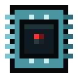
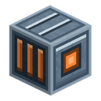

Settlement Core
alaindustrial:settlement_core
Summary
The Settlement Core stands in the town hall of every ALA work town — a dead settlement above an abandoned lab. You find the core dark: the town is dead, there is no territory, the capsules are empty. Run a cable to the core and it comes alive: the settlement's territory appears around the town, and the Reception Capsule can bring back the first shift worker — a resident of the settlement.
The core is the centre of the whole town: it sets the size of the territory, how many houses the settlement may have and how many shift workers. The territory of a town covers all of its buildings, however far from the town hall they stand.
Quick example: you found a town — go into the town hall, find the dark core and run an LV cable to it from your base. The core lights up; open it and the window shows the territory (for a desert town stretched along its pipe, for example 93 × 65 blocks), "Houses: up to 4", "Shift workers: up to 4" — and you become the restorer of the settlement.
How it works
- Dark. A dark core spends nothing — it is switched off. There is no territory, the reception capsule does not work. The settlement's shift workers (if it has any yet) live on their own batteries, and those whose charge has run out stand frozen in place.
- Lighting up. The core lights up once its buffer holds enough for 20 ticks of work — 160 EU/FE. While it is lit, it pays 8 EU/FE every tick: the territory holds and the town lives.
- Going dark. The grid is gone — the core lives on its own buffer. Once the buffer is empty the core runs up a debt, and when the debt reaches those same 20 ticks, it goes dark. With the supply cut completely, that is exactly 20 ticks (1 second) after the buffer ran dry. A supply below 8 EU/FE per tick puts the core out too, only later: three quarters of the price do not hold a settlement forever. The shift workers keep working on their batteries while there is charge in them, then freeze where they stood and do not die from it. Once the core is lit again, it recharges them and wakes them, and they carry on from the same spot.
Only the core's buffer decides whether it is lit: the core has no timer and no switch. The reserve for lighting up is there so that a supply just below the upkeep does not flicker the territory on and off every tick.
In this version every core is LV: the territory, house limit and worker limit below are for LV. Higher core tiers (with a larger territory and a larger settlement) will come later.
Territory
- Shape. The territory is a rectangle that runs the full height of the world: it takes in both the lab under the town hall and the town hall's roof. A rectangle rather than a circle — you can find its edge just by counting your steps along a wall.
- A town from the world holds the smallest rectangle that fits two things at once:
- all the town's buildings, the ground between them and the lab — plus 8 blocks of margin on every side;
- a 65 × 65 block square with the core in the centre (32 blocks from the core in each direction).
That is why every building of a stretched-out desert town is inside: at LV its territory is about 93 × 65 blocks. A town's layout is random, so in your world the size will be different — the core's window shows it.
- A settlement without a town (for example a core placed by a command) holds just the 65 × 65 block square around the core.
- The territory exists only while the core is lit.
- The reception capsule works only on its own settlement's territory, and only while the core is lit.
- A shift worker never walks past the settlement's territory.
- The limits are a ceiling: the capsule will not release a worker beyond the limit.
- The borders can be shown with a button — see "Showing the borders".
Restorer and access
- The settlement belongs to nobody. In the world of ALA the player is a shift worker too, only a living one: a duplicate that did not freeze in the archive. The workers a capsule brings back are like avatar people; they have no master, and neither does the settlement. The player does not own the settlement: they are part of its system and help it come alive and grow. That is why the game calls them the settlement's restorer (R97 of epic.
- The settlement's restorer is the first player to open the window of a lit core. A cable does not remember who laid it, so what matters is who opened the core, not who powered it. Opening a dark core does not wake the settlement: a dead town cannot be taken just by finding it. The new restorer sees "The core recognises you: you are the settlement's restorer" above the hotbar.
- Another player cannot take the restorer's place. The restorer is kept when the world restarts.
- A stranger gets nothing from the settlement (R98). Until somebody wakes the settlement, anyone opens its core, reception capsule, dispatcher and drone nests, or nobody could wake it. A woken settlement recognises only its own: today that is the restorer alone; members of the settlement will join later (R16). For everybody else the core, the reception capsule, the dispatcher and the drone nests do not open, and the chat says "The core does not recognise you: you are not part of this settlement." A stranger sees no list of shift workers, no "Construction" tab and no town hall schematic, puts in and takes out no items, puts in and takes out no drone.
- An operator in creative mode (one with command permissions) opens all of this to look, but changes nothing: the plan, the materials, the start of construction, the capsule's choice and the workers' cards stay the restorer's. Each such look is written to the server log as the line
[ala-towns] operator <name> inspects settlement <number>. - A shift worker standing in the world can still be looked at by anyone (R74): a right click on it opens its card read-only.
Breaking and moving
- Only the settlement's restorer can break the core, with any pickaxe — even a wooden one; it breaks like a block of hardness 5. With a bare hand, or for any other player, the core does not give at all. While the settlement has no restorer, nobody can break the core.
- In creative mode any player breaks the core, as they break bedrock, and nothing drops. The settlement fares exactly as when its restorer breaks the core: it is left without one and waits for a new one.
- For everything else the core is unbreakable, like bedrock: explosions, drills, the block breaker and tools that break many blocks at once leave it alone.
- A broken core drops as an ordinary item — the same one as in the creative tab. The core does not remember its settlement. While a settlement has no core, it sleeps as it would without power: its shift workers, its restorer and everything else are kept.
- Whoever broke the settlement's core reads in chat: "The settlement is left without its core and sleeps. A core placed anywhere on its territory carries the settlement on from that spot. Its buildings can be rebuilt or torn down freely." The settlement may also be left without a core — it simply keeps sleeping and loses nothing. A second core of a settlement and a core outside every settlement write no such line: they leave no settlement without its core.
- Any core placed on the territory of a settlement that has no core continues that settlement: the same restorer, the same shift workers and everything else. The core's new spot becomes the centre of the territory's square, and the town's buildings stay inside it as before.
- A second core cannot be placed in a settlement that already has one: the block is not placed, the core stays in your hand, and the chat tells you where this settlement's core stands. This holds for a dark settlement and for an unwoken one too.
- A core does not found a settlement of its own from scratch. A core placed outside every settlement stays dark even with a full buffer and spends nothing, and the chat says: "This core works only in a settlement's town hall; a settlement of your own from scratch comes later." Whoever placed such a core can break it with any pickaxe. To bring a settlement back to life, the core is placed on its territory.
Energy
| Field | Value |
|---|---|
| Role | consumer; a cable connects to any of the six faces |
| Tier / grid intake | LV; takes packets one tier above its own — up to 128 EU/FE per tick (an MV packet) |
| Buffer | 2000 EU/FE |
| Upkeep while lit | 8 EU/FE/t |
| Reserve for lighting up and debt limit | 20 ticks of upkeep (160 EU/FE) |
| Output | only into the Town Roads through the town hall's inlet — whatever lies above the reserve for 20 ticks of upkeep, and only while the core is lit; the core gives no energy out through its own faces |
After the grid is cut, a full buffer holds the settlement for 2000 / 8 = 250 ticks (12.5 s), then 20 ticks of debt more, and the core goes dark. Re-laying a cable for a moment will not put the town to sleep, while a real outage shuts it down quickly.
The core pays for the whole settlement: the reception capsule takes its own price separately, and the shift workers take no EU/FE from the grid themselves. Each awake shift worker drains 0.25 EU/FE/t from its own battery. A worker who has a house charges at home, on the Charging Bed, from the House Inlet; a homeless worker is topped up by the lit core once a second from its buffer. That comes on top of the core's own 8 EU/FE/t, so the core's demand on the grid grows by what the homeless workers drain. The house inlets get their energy from the core along the town roads. The core never spends the reserve for 20 ticks of its own upkeep on recharging or on the roads. Beyond its upkeep the core fills its buffer, like any machine. How much energy arrives also depends on the wire: a copper cable passes 12 EU/FE per tick, a gold one 48, an electrum one 192.
Interface
- A window of 256 × 204 pixels with no slots and five tabs down the left edge: "Core", "Shift workers", "Closed records", "Construction" and "Chronicle".
- The "Core" tab shows the readouts themselves. On the left is the buffer bar. On the right are the lines:
- the state: "Powered: the territory is held", "No power: no territory", "Second core: the settlement already has one" or "No settlement: works only in a town hall";
- "Territory: W × D blocks" — the size of the territory's rectangle;
- "Houses: up to N" and "Shift workers: up to N";
- the upkeep in EU/FE per tick;
- the restorer: "none", "you" or the player's name.
- A dark core with no restorer explains under the buffer bar how to become the restorer.
- Under the buffer bar is an eye button, "Show the settlement's borders" (see "Showing the borders").
- The "Shift workers" tab lists the settlement's living workers and those awaiting return; the "Closed records" tab lists the dead. Each row shows the worker's face (its 3D head in the look it has in the world), the number, the name, the level and the state ("working", "waiting" or "closed"). The list refreshes by itself while the tab is open. Clicking a row opens the worker's card (see "The settlement's shift workers").
- A living worker's row has a "Find" button: the worker is outlined for 8 seconds with a contour seen through walls — an easy way to spot it in the settlement. Above the hotbar appears "W-117 is outlined for 8 seconds", and if the part of the world where it stands is not loaded — "W-117 is too far away: its area is not loaded". All players nearby see the outline. Anyone the settlement recognises may press "Find": it changes nothing.
- The "Construction" tab shows the settlement's buildings, their orders, the road network and the plans (see "Construction").
- Under the lines of a lit core's "Core" tab are the settlement's needs (see "The settlement's needs"): one line "The town needs: …" and a short list below it, or "The town needs nothing right now."
- The "Chronicle" tab shows the town hall's log: what changed the settlement, newest first (see "The settlement's chronicle").
The settlement's needs
Every 5 seconds a lit core looks at what the settlement lacks and writes it on the "Core" tab. At the top is one line, "The town needs: …", the most urgent thing; below it, a short list of everything needed right now. The settlement speaks with one voice: not a request from each shift worker, but one list. Each need carries its picture, so the player sees at a glance what the settlement wants: a battery for energy, the first missing item for materials, a 3D house for a home, the building's 3D icon (as on the "Construction" cards) for a restoration or a repair. The most urgent need's picture stands beside the "The town needs" line; each need of the list has a small one at the start of its row.
- Energy: the core cannot keep up its upkeep, or holds less than its reserve of 20 ticks.
- Materials for an order: an order stands still because the dispatcher's buffer lacks something: "Glass ×6, Bricks ×12". Put what is missing into the buffer; the drone tries again by itself, and the line goes away.
- A home: living shift workers have no home, or the next worker the capsule could bring back has nowhere to live.
- Restoration: a building can be ordered now, a house of a known type within the house limit or the town hall whose plan is already in the dispatcher; and mending of a building restored before and damaged since.
- A workplace: a shift worker has nowhere to work. It comes with workplaces (the next step of the release); today this line never appears.
A dark core shows no needs: a dark settlement has one need, and the state line names it.
The settlement's chronicle
The "Chronicle" tab is the town hall's log: short lines about what changed the settlement, newest first. A line shows the game day, the shift worker it is about (number and name) and what happened:
- a shift worker arrived through the reception capsule (new or brought back);
- a shift worker moved into a house;
- a building was restored;
- a shift worker died;
- a house's inlet is broken: the house has no power;
- a worker's record was re-registered under a new number;
- the settlement's notes: for example, when the core wakes for the first time, where the sheets of the town hall's plan lie.
A line about a shift worker starts with its number and name, with no colon, and reads as a sentence: "N-906 moved into Capsule house (type 1)".
The line about a restoration reads the same whatever the building's name: "Building restored: Town hall". A long line takes two rows, a very long one is scaled down and may take three; the highlight under the mouse covers the whole entry, its day and every row. A line's tooltip shows it whole and wraps like vanilla tooltips. The same event again in a row adds no line: the line gets a count, "(×3)". A settlement keeps at most 200 lines; the oldest go first. The chronicle lives in the settlement's data, not in a block: a broken town hall does not lose it. Only the settlement's own may read the chronicle and the needs (R98).
Construction
The settlement knows all its buildings and keeps their orders: what to clear, where to lay a road, what to rebuild. Executors take the jobs — Construction Drones from the nests on the town hall's roof, then shift workers. The materials, the town hall's plan and the queue of orders lie in the dispatcher. The "Construction" tab of the core's window shows it all.
- Drones. The core charges the drone nests and pays for every block placed and every block removed — out of what it holds above the reserve for its upkeep. How many nests work by the core's tier: LV 1, MV 2, HV 3, atomic 4, and one more once the town hall is restored.
- What to do next. At the top of the tab is a dark bar with one line: the player's next step. It goes in order: "Find the town hall's plan sheets (N of 3 found): where to look is under “Plans” below" → "Place the town's dispatcher and power it: the town hall's plan is put together there" → "Put the 3 plan sheets into the dispatcher and leave the restoration plan in its plan slot" → "Set a nest with a drone above the town hall: without a drone nothing gets built" → "All set: press “Restore” on the town hall's card". Then about the current order: "Building waits for materials. Put into the dispatcher's buffer: …", "Work on “…” has stopped: the reason is on its card", "The drones are building “…”: follow the stages on its card". After the town hall: "A building is damaged: press “Repair” on its card", "The town hall stands: pick a house and press “Restore” on its card", "To build more houses, find their plan sheets in the ruins of those houses", "The houses have reached the core tier's limit: raise the tier to build more" and at the end "The town is rebuilt: the drones look after its buildings themselves".
- Building cards. Under the bar is a list that scrolls with the mouse wheel, in the sections "Town hall", "Houses" and "Other buildings". Each building has a card: a 3D icon of the building itself, its name (for a house with its type: "Capsule house (type 3)"), a state chip, the restoration percentage with a bar, and one button for the next step. The chips: "ruin", "damaged", "no plan", "not yet" (waiting for the town hall or for room under the house limit), "under way", "waiting" (the job has stopped or materials are short), "done". A restored building is exactly 100 %, the bar full; an unrestored one shows at most 99 %. A house's card shows who lives in it.
- The card's button depends on the building's state: "Restore" (a ruin), "Build" (a new house laid by the restorer), "Resume" (an order that was cancelled), "Repair" (a building restored earlier and then damaged) or "Cancel the order" (the order is already queued). Only the restorer sees the button; if an order cannot be placed, the card says why instead of the button: "Restore the town hall first", "The core's tier allows no more houses" or "No house plan of type N yet: look for the sheet in this house's ruin". The order goes into the dispatcher's queue.
- An open card. A click on a card opens it ("Click to show the stages and jobs"): the stage the building is at ("Stage 2 of 5: Walls", the stage's block count and a bar) or "Every stage stands"; what the stage still lacks; why the building stands — in red ("In the way: X at x y z" and the other reasons, "Order called off. Press Resume and the drones go back to work"); at "In the way: X at x y z", a small spyglass button, "Highlight it in the world", makes the block in the way blink with a red outline seen through walls for 8 seconds (only the player who pressed it sees it; anyone the settlement knows may press it); who lives in the house ("Lives here: W-117" or "Nobody lives here"); the order's open jobs (clearing, road, building) with their state and, for the restorer, the small "Start again" and "Cancel the job" buttons; the "Show the schematic" toggle. The card a drone is working on is open by itself.
- A building's card in the world. A right click on a House Inlet or on the plate of a number plaque opens the same card in a window of its own: the name, "Restored: N%", what is missing, who lives there, the order button (for the restorer) and "Show the schematic". Anyone the settlement recognises can open it, from no farther than 10 blocks.
- A building's state. Besides the chip, a building has a state (the building's card in the world shows it): "ruin" — as found, no jobs; "clearing" — the debris goes first; "repair" — building is under way, or an intact building lost a block; "intact" — restored. A building that lacks something important has a line under it: "Missing: …".
- Restored means the building matches its intact version by 90 % and all its key points are in place. For the town hall these are the settlement core, the reception capsule, the roof over the hall, the door and the drone pad on the roof. For a house — the door, a roof without holes, light, a number plaque, a charging bed, a house inlet and the connection to the core (see "Shift workers' houses"). The first time a building is restored, it goes into the dispatcher's journal, and the restorer gets one chat line.
- Town hall plan sheets. A drone rebuilds the town hall only from a restoration plan, and the plan is put together from three sheets in the dispatcher. The first time the town's core wakes, a line goes into the town hall's log: the hall can be restored, look for the three sheets of its plan. The "Plans" section at the bottom of the tab shows the town hall's plan sheets in one line — "N of 3" — and each sheet with where to look: sheet 1 in a chest of the town hall, sheet 2 in the ruins of a house, sheet 3 in the lab under the town hall. A found sheet is green, a missing one red. A sheet counts as found once a sheet of the town's style has been put into the town's working dispatcher (or the assembled plan lies there), and it stays found when taken out. The core never looks into other chests. The section is read-only, and anyone the settlement recognises sees it.
- House plans. In the same section is the library of house plans: a line for each house type of the settlement, "House Plan (type N)": "learned" or "not found". The settlement knows a learned plan for good. A plan can be learned in two ways: right-click the core with a House Plan or put it into the dispatcher's plan slot; the sheet is used up, and the chat says "the settlement has learned House Plan (type N)." Only the restorer teaches the settlement ("Only the settlement's restorer teaches it house plans"); the core does not take a plan the settlement already knows ("The settlement already knows this house plan"). A restored town hall itself gives the plan of the simplest house of its style — type 1; the other three are found in the ruins of their houses.
- Road network. The "Road network" section is the line "Settlement road network" with its own schematic toggle: it shows in the world, as ghosts, every cell of the Town Roads not yet laid. The settlement's network is a tree from the town hall's inlet: streets to the buildings' inlets, each new building hooks onto the nearest point of the network. The cells of future streets are taken: a new house is not laid over them. If a restored building's link to the core is broken, its card says where the break is: "No link to the core: the road is broken at X, Z". There is no ring and no second way to the core: a break cuts off everything beyond it, but you can close a ring with your own cable. In the network schematic, and in the schematic of the building cut off, the cell of the break shows as a red road ghost.
- The world decides. The core compares the buildings with their intact version a little every tick. If a player or a creeper breaks a block of an intact building, it is "repair" again, and the work appears by itself.
- A restored building mends itself. The repair is placed with no button: a clearing when there is something to take away, and the building. The drones take it like any job and take the blocks from the dispatcher's buffer; short of blocks, the job stands with the usual reason. You can also place a repair yourself with the "Repair" button. The restorer gets two chat lines about the town hall: "the town hall is damaged, the drones are mending it" when the repair is placed, and "the town hall is mended" when it stands whole again. A repair says nothing about stages.
- Jobs. A job has a kind ("Clearing", "Road", "Building") and a state: "queued", "taken", "blocked", "done", "cancelled". A blocked job says why: "No materials: …", "No restoration plan", "Chunk not loaded", "In the way: X at x y z", "The drone cannot reach x y z", "X cannot be built at x y z", "No way for the road", "No energy" — and what to do (see the dispatcher page). An abandoned job goes back to the queue and continues from where it stopped.
- Who manages it. Only the settlement's restorer can place, cancel and resume an order, start a blocked job again and cancel it. An operator in creative mode and others the settlement recognises see the tab read-only ("Only the settlement's restorer manages construction."); strangers do not see it at all.
- A building's schematic. An unfinished building (and a building with an order) has a "Show the schematic" toggle on its open card, for anyone the settlement recognises, not only the restorer. Translucent, faintly blue copies of the very blocks the building still lacks appear in the world — with their own textures and models, turned the right way (stairs, doors, carpets, chests, beds) — together with its road branch not yet laid. The schematic shows one building: turn it on for another and it goes off on the first. The drone fills it in, and the schematic updates itself every few seconds. Only the player who pressed it sees it. It goes away on a second press, in another dimension and farther than 208 blocks from the core.
- A new house. Besides the ruins, a house can be built on a free spot of the territory: the restorer places a House Inlet and in its window picks a learned plan and a turn. The laid house appears in the "Houses" section with the "Build" button.
Shift workers' houses
Each shift worker of the settlement needs a capsule house of its own: without a free house fit to live in, the Reception Capsule does not release a new worker.
- A house fit to live in. A house is fit to live in when it matches its intact version by 90 % and all its key points are in place: the door, a roof without holes, light, a number plaque, a Charging Bed and a House Inlet, with the inlet in one energy network with the core — through a Town Road or any cable of the player's. Who built it — a drone or the player by hand — does not matter. What is missing, the card names in the line "Missing: …".
- House limit. Restored and new houses together — no more than the tier's limit (4 at LV). A house counts if a job is under way on it, or if it was restored earlier and its inlet is intact. Untouched ruins do not count. Break the inlet and the house is taken off the count, and its resident becomes homeless. A house the player finishes beyond the limit stands empty.
- Moving in. Every 2 seconds a lit core settles the town: the resident of a house that is no longer fit and a worker dead for good move out, and then each free house is taken by the first homeless worker in order of number. A worker awaiting return keeps its house. Shift workers of an old world start homeless and move in the same way.
- A worker's card says "Home: house at x, y, z" (where its bed stands) or "Home: none". The restorer can move a living worker to another free house fit to live in: the "Relocate" button and the "Another free house" arrow on the home line.
- The plaque. A house's plaque shows its resident's number, and an emptied house shows the number of its last resident with a broken letter. The construction drone changes the plates itself, without messages (see Engraved Plates). The old numbers go into the house's history.
- Charging at home. When a resident's battery drops below a quarter, it goes to its house, lies down on the charging bed and charges from the house inlet until the battery is full, then gets up and goes back into the settlement. A worker running from a mob does not lie down, and a hit gets it up. A house with no energy in its inlet does not charge, and the resident's battery runs down. A homeless worker is charged by the core.
The settlement's shift workers
Every shift worker has a card. A right click on the worker or a row of the list in the core's window opens it. Any player within 10 blocks of the worker may look at the card, and from its settlement's core's window only those the settlement recognises (R98); only the settlement's restorer may change anything on it, and only for a living worker.
- Card: a 3D figure of the worker, the number and the name (the restorer sets a name of up to 16 characters with the pencil button), the battery "charge / capacity", health, rank and level with an experience bar, "Passed through the battery", free points and four stats. The "Record" block carries the assignment: "Assigned to: settlement No. N", and under it the worker's home. The card never names a player: a shift worker belongs to the settlement, not to a player.
- Battery: a new worker carries 20 000 EU/FE, and each point in "Battery" adds 5 000 EU/FE.
- Level and rank: the level grows only from energy that has left the worker's battery, 1 experience point per 1 000 EU/FE. There are 40 levels, grouped into ranks of 5: "Rank 1" to "Rank 8". Level 5 takes 72 000 EU/FE of work, level 20 takes 951 000 and level 40 takes 10 259 000. The settlement credits the same energy to its restorer, in the "Used" line and in mastery, while the restorer is online.
- Points: 1 point for every level above the first, at most 10 in one stat. "Strength" (+2 health per point) and "Battery" work at once; "Carrying capacity" and "Pace" show greyed out with the note "needs a job" and take no points yet. The restorer invests points with the "+" button on the card. All points can be taken back at the Reception Capsule (see its page).
- Personal file: a four-part biography (where they came from, what they did, a habit, a scrap of memory) and up to 12 latest service marks: issued by the capsule, name recorded, wounded, new level, new rank, brought back, number re-registered.
- Number: when the number was issued and which numbers the worker carried before.
- The card of a dead worker opens read-only, stamped "RECORD CLOSED" or, if death is not final on the server, "AWAITING RETURN".
Charging with a battery. A right click on a living worker with a charged battery from the mod (or another charged item from the mod that gives out charge) pours EU/FE into the worker's battery at once, as much as fits; the rest stays in the item. Above the hotbar you see how much went in ("W-117: +500 EU/FE into the battery") or "the battery is already full". Any player may charge a worker. Charging wakes a frozen worker but gives no experience. A dead worker or one awaiting return cannot be charged. A right click with an empty hand, an empty battery or any other item opens the card; on a living worker's card, under the health, there is the hint "Charge: right-click it with a battery".
Mobs. Hostile mobs hunt shift workers just as they hunt players. A worker runs from them but never leaves its settlement's territory.
Showing the borders
The eye button in the core's window turns the settlement's borders on and off — only for the player who pressed it. A core placed outside every settlement has no borders, and its button does not light up.
- The walls stand exactly on the edge of the territory: a block touching a wall from the inside is in the settlement, one touching it from the outside is not.
- From the outside the border is translucent mint glass with a grid every 8 blocks: walls, floor and dome.
- From the inside you see only the grid of the walls and the dome, with no fill and no floor — otherwise the glass would lie over every room and street, and the edges of the settlement could not be made out.
- The dome is a closed vault over the rectangle that flows on from the walls; it has the same shape from inside and outside.
- The shown floor is 16 blocks below the core (that is where the lab under the town hall is), and the walls end 16 blocks above the core (that is where the town hall's roof is). The territory itself has no height limit — this is only the height of the drawing.
- The border is drawn over the world: the floor is usually underground, the far walls behind hills.
- The display goes off when you press the button again, when the settlement's core is no longer in a loaded chunk, when you change dimension and when you leave the world. Farther than 512 blocks from the edge of the territory the border is not drawn.
Block Properties
| Field | Value |
|---|---|
| Shape | full 16³ cube; a steel casing with a copper window on the sides and a copper ring on top |
| Light | a lit core glows (light level 13) and its window "breathes"; a dark one gives no light |
| Hardness and tool | unbreakable, like bedrock, and immune to explosions; the settlement's restorer breaks it with any pickaxe, like a block of hardness 5; in creative mode anyone breaks it |
| Piston | cannot be pushed |
| Drop | the core itself, an ordinary item; it does not remember the settlement; nothing drops in creative mode |
| Where it stands | in the town hall of every work town, above the hatch into the lab; on the roof above the core is a landing pad for drones |
| Creative tab | the mod's tab and the vanilla "Functional Blocks" tab |
Recipes
The core is a late-game block: a Crafting Table, 3×3 shape.
| Resonant Crystal (charged) | Reactor Control Circuit | Resonant Crystal (charged) |
| Resonance Coil | Advanced Machine Casing | Resonance Coil |
| Reinforced Bearing | Reinforced Energy Storage | Reinforced Bearing |
→ 1 Settlement Core. The recipe unlocks in the recipe book once you have had a Resonant Crystal, a Reactor Control Circuit, a Reinforced Bearing and a Reinforced Energy Storage in your inventory.
Why so expensive. The core is the heart of a settlement, not a machine. It holds three Advanced Machine Casings (one of its own and two inside the energy storage), a Reactor Control Circuit, two Resonance Coils, two crystals and two bearings — more than a pair of Workstations and more than any MV machine. A player makes parts like these only after the reactor. The energy storage in the middle of the bottom row is the core's "one tier up" reserve: an LV core takes an MV packet.
Crafting a core does not give you a settlement of your own: a core outside every settlement stays dark. The recipe is there to give a core back to a settlement that lost its own (it burned, sank in lava or went missing some other way).
Progression
- In this version — LV; higher tiers will come later.
- Needed for the Reception Capsule — it works only while the core is lit — and for the shift workers to live: without a core the settlement sleeps.
- Runs the settlement's construction: the Town Dispatcher, the Drone Nests, the shift workers' houses (House Inlet, Charging Bed, House Plan) and the Town Roads.
- Stands in the town hall of an ALA work town.
Related
- Reception Capsule — brings shift workers back while the core is lit.
- Town Dispatcher — the town hall's plan, the queue of orders and the construction materials.
- Drone Nest — the Construction Drones the core charges.
- Town Road — the core's energy goes along it to the houses.
- Small Mob Repeller — another block that holds a field around itself for EU/FE.
- Workstation — built from the same row of components.
Crafting
Shaped Crafting

▶
Settlement Core